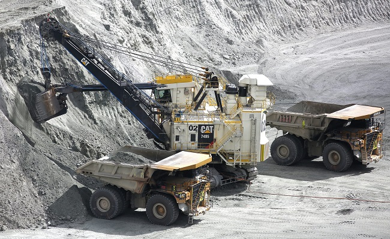
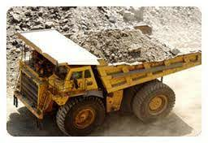

CARGUIO
Es la operación que se realiza para poder cargar el material con la ayuda de equipos de carguío. Entre estos
equipos de carguío tenemos: CAT 994F, Komatsu P&H 4100 XPC AC, Komatsu PC500-6, entre otros.

ACARREO
Es la operación que se realiza con la finalidad de transportar todo el material hacia la
planta concentradora. Los equipos de acarreo son los siguientes: CAT 798 AC, CAT 785D, CAT 797F, entre otros.
